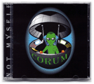

Finalmente terminada, no mismo es el
resultado de un cierto songwriting muy creativo. Aunque Jim y Jay
escribieron casi todo para este CD, David Hillman (jugador bajo
anterior con el grupo) co-escribió a la música para la más
pesado y Proctology, y a Dave que el rand
desarrolló más de las piezas del tambor que en Riffhead.
Esté preparado para algún muy diverso, la música a menudo
pesada, y definitivamente extraña cuando no misma release/versión
oficialmente. Hasta entonces, por qué no escuchar las
pistas en AMP3.com?
|

audio–líricas–créditos |
|
Riffhead es la culminación concluído de 10 años
de songwriting
de Jim y
de Jay.
Las canciones tienen gusto del vuelo de la oscuridad, ensayos y Tribulations, Riffhead, y las derechas del juicio
fueron
comenzados en los años 80 y se desarrollaron concluído los años
mientras que los miembros de la venda vinieron y fueron.
Tarde en 1995, finalmente acordaron seguir siendo una venda
del tres-pedazo con
Dave detrás de los tambores.
Refinaron las canciones que jugaban demostraciones
en Mankato, manganeso, con las vendas como Bob, muchachos de la
porcelana, mármol, y Luminol descubiertos antes de registrador las
pistas, preparando las ilustraciones, y release/versión el CD en mayo
de 1997.
|

audio–líricas–créditos |
Escuche los clips de MIDI creados por los
miembros de Corum.
|